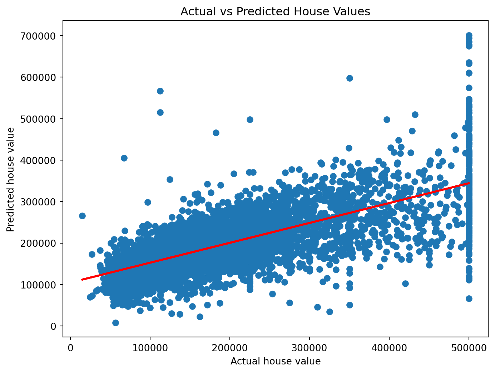

import pandas as pd
import matplotlib.pyplot as plt
import numpy as np
import seaborn as sns
from sklearn.model_selection import train_test_split
from sklearn.linear_model import LinearRegression
from sklearn.metrics import mean_squared_error, r2_score1. Introduction:
This blog aims to use linear regression model to predict housing prices in CA. It will perform feature selection based on the correlation of housing attributes. The linear regression model is later trained using the selected features. It also includes a scatterplot to assess the model’s performance and a best-fit line to show accuracy.
2. Import libraries:
3. Open the csv file:
ca_df = pd.read_csv('california-housing.csv')
print(ca_df.head()) longitude latitude housing_median_age total_rooms total_bedrooms \
0 -122.23 37.88 41 880 129.0
1 -122.22 37.86 21 7099 1106.0
2 -122.24 37.85 52 1467 190.0
3 -122.25 37.85 52 1274 235.0
4 -122.25 37.85 52 1627 280.0
population households median_income ocean_proximity house_value
0 322 126 8.3252 NEAR BAY 452600
1 2401 1138 8.3014 NEAR BAY 358500
2 496 177 7.2574 NEAR BAY 352100
3 558 219 5.6431 NEAR BAY 341300
4 565 259 3.8462 NEAR BAY 342200 4. Correlation Feature selection:
The code calculates the correlation coefficients of the housing attributes. It then selects the attributes that meet the threshold requirement.
correlation_with_price = ca_df.drop('ocean_proximity', axis=1).corr()['house_value']
selected_features = correlation_with_price[(correlation_with_price >= 0.1) | (correlation_with_price <= -0.1)].index
print(f'Selected features: {selected_features}')Selected features: Index(['latitude', 'housing_median_age', 'total_rooms', 'median_income',
'house_value'],
dtype='object')6. Scatterplot to assess the performance of the regression model:
The scatterplot is used to visualize the actual vs. predicted housing values from the regression model. The best fit red line is also plotted on the scatter plot.
slope, intercept = np.polyfit(y_test, y_pred, 1)
best_fit_line = np.poly1d([slope, intercept])
plt.figure(figsize=(8, 6))
plt.scatter(y_test, y_pred)
plt.plot(y_test, best_fit_line(y_test), 'r-', lw=2)
plt.xlabel('Actual house value')
plt.ylabel('Predicted house value')
plt.title('Actual vs Predicted House Values')
plt.show()
7. Predicting the house price with the regression model:
In this case, the new house has features with latitude 37.85, housing_median age 50, total_rooms: 2200, median_income: 2.6059
# [latitude, housing_median_age, total_rooms, median_income]
new_house = pd.DataFrame([[37.85, 50, 2200, 2.6059]], columns=X_train.columns)
predicted_price = model.predict(new_house)
print("Predicted Price: ", predicted_price[0])Predicted Price: 183161.94654197228